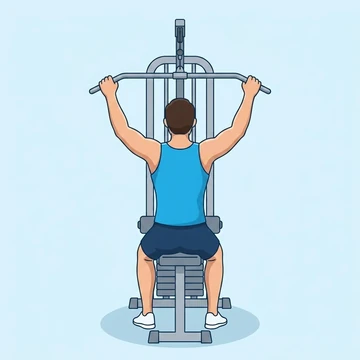
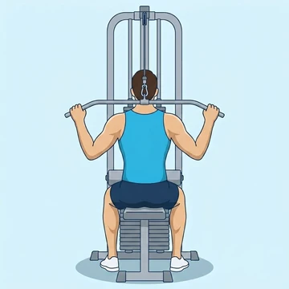
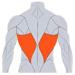
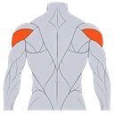
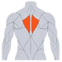
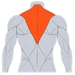
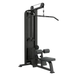

Behind-the-Neck Lat Pulldown
A wide-grip lat pulldown taken behind the head, targeting the upper lats and traps — requires full overhead shoulder mobility.
Back · Lat Pulldown Machine · Advanced


Muscles worked by the Behind-the-Neck Lat Pulldown
Primary

LatsLatissimus DorsiSecondary

Rear DeltsPosterior Deltoid
RhomboidsRhomboid Muscles
TrapsTrapeziusAlso called: lats, lat, latissimus dorsi, latissimus, back wings.
Equipment

Lat Pulldown MachineAlso called: lat pulldown, pulldown machine, lat pull, vertical traction, vertical traction machine, lat machine.
How to do the Behind-the-Neck Lat Pulldown
- Sit at a lat pulldown station with thighs secured under the pad.
- Grip the bar with a wide, overhand grip — wider than shoulder-width.
- Keep the torso upright and tuck the chin slightly forward.
- Pull the bar down behind the head until it touches the base of the neck.
- Return under control to the full overhead stretch.
- Repeat for the recommended number of repetitions.
Form tips
- Only perform this if you have full, pain-free overhead shoulder mobility.
- Use a moderate load — this is not a strength lift, it's a hypertrophy accessory.
At a glance
| Body part | Back |
|---|---|
| Category | Strength |
| Force type | Pull |
| Mechanic | Compound |
| Difficulty | Advanced |
| Equipment | Lat Pulldown Machine |
| Goals | Hypertrophy |
| Tags | Pull day |
| MET | 6.0 (metabolic equivalent, for calorie estimates) |
| Unilateral | No |
| Bodyweight | No |
| Dataset id | behind-the-neck-lat-pulldown |
Behind-the-Neck Lat Pulldown in German & Spanish
| German | Nacken-Lat-Pulldown |
|---|---|
| Spanish | Jalón al Cuello Detrás de la Cabeza |
Descriptions, instructions and tips ship in all three languages in the JSON.
Exercise data (JSON)
The record below is exactly what exercises.json ships for this exercise — names, descriptions, instructions and tips in English, German and Spanish.
{
"id": "behind-the-neck-lat-pulldown",
"name_en": "Behind-the-Neck Lat Pulldown",
"name_de": "Nacken-Lat-Pulldown",
"name_es": "Jalón al Cuello Detrás de la Cabeza",
"description_en": "A wide-grip lat pulldown taken behind the head, targeting the upper lats and traps — requires full overhead shoulder mobility.",
"description_de": "Ein breiter Lat-Pulldown hinter den Kopf, der den oberen Latissimus und Trapezmuskel beansprucht – erfordert volle Schulterbeweglichkeit über den Kopf.",
"description_es": "Un jalón al dorsal con agarre ancho llevado detrás de la cabeza, que trabaja la parte superior del dorsal y los trapecios: requiere movilidad de hombro completa sobre la cabeza.",
"category": "strength",
"force_type": "pull",
"mechanic": "compound",
"difficulty": "advanced",
"equipment": "lat_pulldown_machine",
"body_part": "back",
"primary_muscles": [
"latissimus_dorsi"
],
"secondary_muscles": [
"posterior_deltoid",
"rhomboids",
"trapezius"
],
"goals": [
"hypertrophy"
],
"tags": [
"pull_day"
],
"variation_group": "lat-pulldown",
"is_unilateral": false,
"is_bodyweight": false,
"instructions_en": [
"Sit at a lat pulldown station with thighs secured under the pad.",
"Grip the bar with a wide, overhand grip — wider than shoulder-width.",
"Keep the torso upright and tuck the chin slightly forward.",
"Pull the bar down behind the head until it touches the base of the neck.",
"Return under control to the full overhead stretch.",
"Repeat for the recommended number of repetitions."
],
"instructions_de": [
"Setze dich an der Lat-Pulldown-Station mit den Oberschenkeln unter den Polstern.",
"Greife die Stange mit einem weiten Obergriff – breiter als schulterbreit.",
"Halte den Oberkörper aufrecht und neige das Kinn leicht nach vorne.",
"Ziehe die Stange hinter den Kopf, bis sie den Nacken berührt.",
"Kehre kontrolliert in die vollständige Überkopfstreckung zurück.",
"Wiederhole die empfohlene Anzahl von Wiederholungen."
],
"instructions_es": [
"Siéntate en la máquina de jalón con los muslos asegurados bajo el pad.",
"Agarra la barra con un agarre ancho prono, más ancho que la anchura de los hombros.",
"Mantén el torso erguido e inclina la barbilla ligeramente hacia adelante.",
"Tira de la barra hacia abajo detrás de la cabeza hasta que toque la base del cuello.",
"Vuelve de forma controlada al estiramiento completo sobre la cabeza.",
"Repite el número de repeticiones recomendado."
],
"tips_en": [
"Only perform this if you have full, pain-free overhead shoulder mobility.",
"Use a moderate load — this is not a strength lift, it's a hypertrophy accessory."
],
"tips_de": [
"Führe diese Übung nur aus, wenn du volle, schmerzfreie Schulterbeweglichkeit über den Kopf hast.",
"Verwende ein moderates Gewicht – das ist kein Kraftheben, sondern eine Hypertrophie-Zusatzübung."
],
"tips_es": [
"Solo realiza este ejercicio si tienes movilidad de hombro completa y sin dolor sobre la cabeza.",
"Usa una carga moderada: no es un levantamiento de fuerza, es un accesorio de hipertrofia."
],
"met": 6.0,
"images": {
"flat": {
"start": "images/flat/behind-the-neck-lat-pulldown-start.webp",
"peak": "images/flat/behind-the-neck-lat-pulldown-peak.webp"
}
}
}Fetch just this exercise
const { exercises } = await fetch(
"https://exercise-dataset.com/exercises.json"
).then(r => r.json());
const ex = exercises.find(e => e.id === "behind-the-neck-lat-pulldown");Free for personal and commercial in-app use with attribution (“Exercise data by RepDB”) — see the license and ready-made attribution snippets. Redistributing the data as a dataset or API is not permitted.